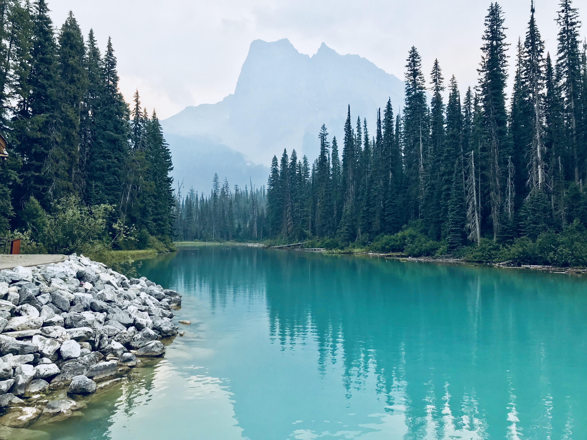

Banff and The Canadian Rocky Mountains
Trip Highlights
- # of Days: 6
- When we traveled: August
- Where we stayed: StoneRidge Lodge (Canmore)
- Mode of transport: Rental car (highly recommended)
- Featured activities: Hiking, nature
- Top activities: Moraine Lake, Lake Louise
- Top food/drinks: El Furniture Warehouse (Calgary), Rocky Mountain Flatbread (Canmore), Masala Authentic Indian Cuisine (Banff)
- Other tips: Head out early to get the best, tourist-free views
- Photos: All pics below taken with our iPhone 7s
View our interactive map
Day 1: Flight to Calgary
- If you’re traveling from afar, flying into Calgary and relaxing for a night before heading West to Banff is probably your best bet. We stayed in a cheap AirBnB in downtown Calgary for one night and explored the city before doing driving down to Banff the next morning.
- In Calgary, we wanted to mostly just relax but we did explore a bit. Some highlights:
- Explore the Calgary Radio Tower
- The Olympic Park
- El Furniture Warehouse (this is a restaurant but definitely worth a visit if you like cheap drinks and food)
Day 2: Lake Day, Downtown Canmore, & Downtown Banff
- We woke up fairly early and immediately began our scenic drive to Banff (it’s about a 2 hour drive)
- Since we had a late afternoon check-in, we first drove to some viewpoints, including:
- Lake Minnewanka (Two Jack Lake and View Point)
- Vermillion Lakes
- Bo Valley Parkway scenic drive up until Johnston canyon (will hike here a later day)
- We then wanted to grab some lunch, so we went to downtown Canmore (where we were staying for the week). We grabbed pizza @ Rocky Mountain Flatbread and tried some local beers. There are also plenty of ice cream and fudge shops within walking distance to choose from to fulfill your sweet tooth.
- We then checked into our resort (Stoneridge Resort). We highly recommend staying in Canmore if you are looking to save some money as it is really close to Banff. After settling in, we drove to Banff downtown and walked around. Banff is similar to Canmore but its just closer to the park/mountains. Here, you can explore various restaurants, gift shops, etc.
- We then ordered Thai food to the hotel and relaxed at night (next morning is going to be really early).
Day 3: Moraine Lake & Hike at Lake Louise

Emerald Lake
- Be sure to set your alarms really early – we woke up at 4am to get ready for a day full of hiking and exploring. We left our lodge by 5am to head out to Moraine Lake (it is going to be pitch dark, so be sure to rely on someone who is comfortable driving in the darkness and narrow roads). Moraine Lake is beautiful and particularly mesmerizing when the area is just you and your fellow travelers; by the time we got there (around 6am), we saw a total of maybe 3 or 4 cars. (by midday, it was packed). There are various hikes and trails at Moraine Lake, but we wanted to save our longer hike for Lake Louise, so we only did some really small trails:
- Rockpile Trail: Climb up rocks and get a perfect view overlooking Moraine Lake with the mountains in the backdrop
- Shoreline Trail: walk along the shoreline for some pretty views of the lake
- After sunrise, we headed to Lake Louise. Here, we picked Lake Agnes Trail (Tee House Trail). It took about 2 hours but was actually pretty challenging - it worked well for our parents who evidently are in better shape than us.
- During the trail (which is predominantly uphill), there a variety of points to stop and admire the scenery. Key highlights of this trail, include: (1) Mirror Lake and (2) Lake Agnes and Tee House
- After an exhausting hike, we relaxed at the bottom and refueled
- Because we finished earlier than expected, we then drove to YoHo National Park. Here, there are separate locations to check out:
- Natural Bridge
- Emerald Lake
- Spiral Tunnels Viewpoint
- Takakkaw Falls
- After a long day, we ordered Indian carry out and relaxed at the resort
Day 4: Johnson Canyon Hike & More Viewpoints

- We started the day at 8:30 in the morning and headed to Johnston Canyon
- We did both the lower and upper falls trails (around 5km of hiking)
- We then explored various viewpoints, including:
- Fairmont Banff
- Bow Falls Viewpoint
- Bow River Viewpoint
- Got an early dinner in downtown Canmore at Santa Lucia Trattoria, an Italian restaurant, and relaxed the rest of the night
Day 5: Columbia Icefields via Icefields Parkway

- Early morning start (6:30am) as we went to the Columbia Icefields via Icefields Parkway. Remember to fill up on gas before you leave!
- On the way, we stopped to see other remarkable sites:
- Hector Lake
- Bow Lake
- Peyto Lake
- Finally, we explored the icefields from the visitor center (there are options to actually do activities on the glacier). We enjoyed some nice poutine and enjoyed the drive back.
- We again stopped at Hector Lake because we loved it so much.
- Spent the evening in downtown Banff again and ate at Masala Authentic Indian Cuisine.
Day 6: Mt. Norquay; Banff Springs Golf Course; Cave and Basin Historic Site
- We slept in (our version of sleeping in equals 9am) and drove through downtown Canmore. This was our last day, so we explored more simple and relaxing sites.
- After lunch we visited Lake Minnewanka again, this time via Two Jack Lake Viewpoint
- We also took a scenic drive to Mount Norquay and enjoyed the breathtaking views of the city from above
- We then drove back down and checked out the Banff Springs Golf Course (which if you are into golf, you should definitely try to play on) and the Cave and Basin Historic Site.
View our itinerary on the map below
Click the top left panel button to see all points of interest